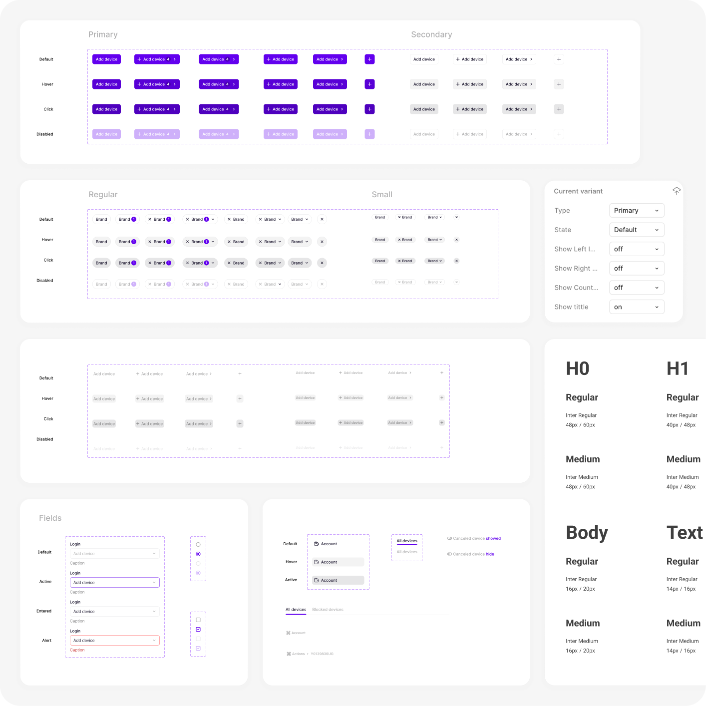
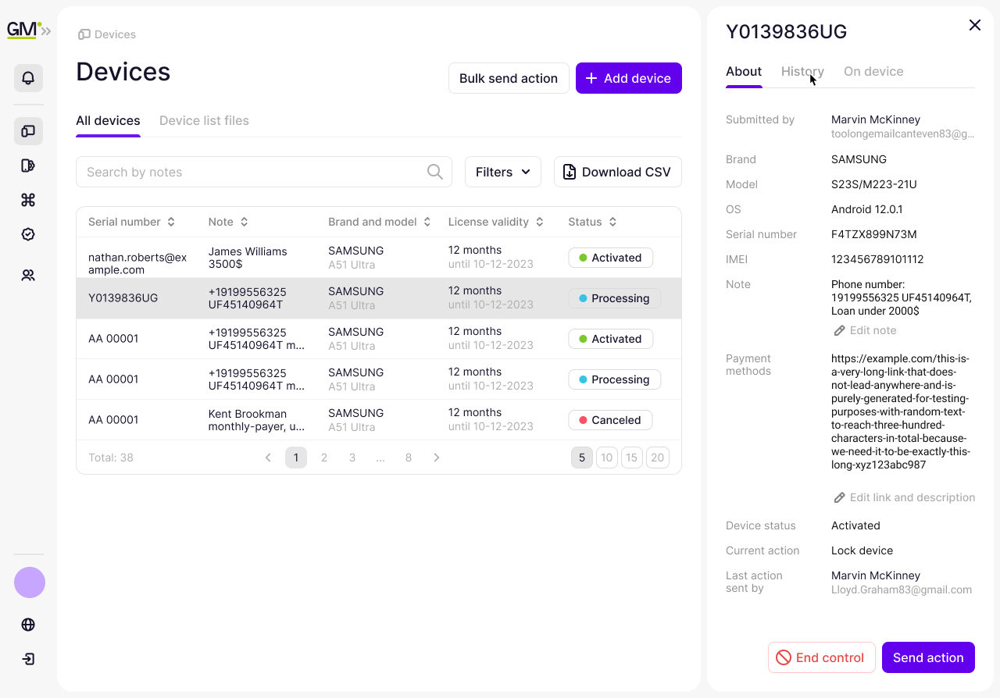
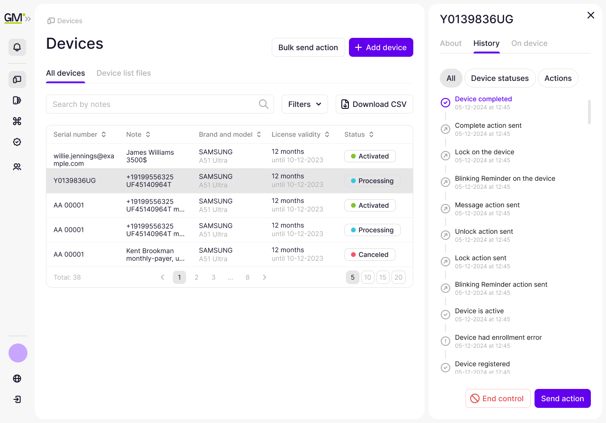
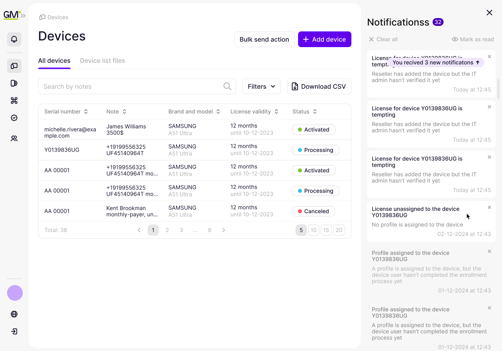
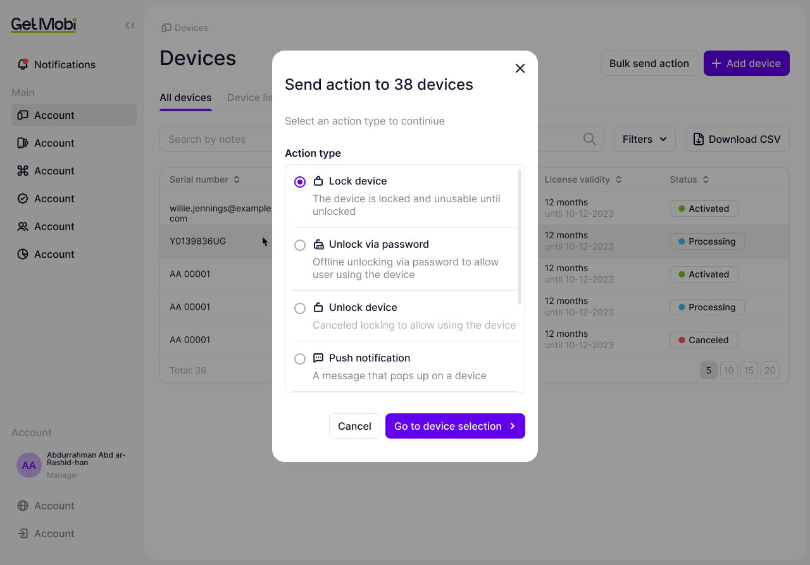
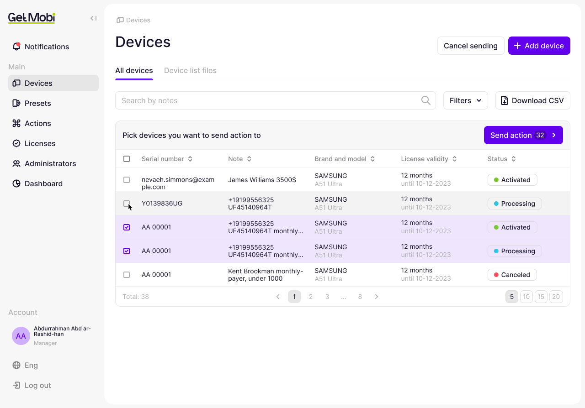
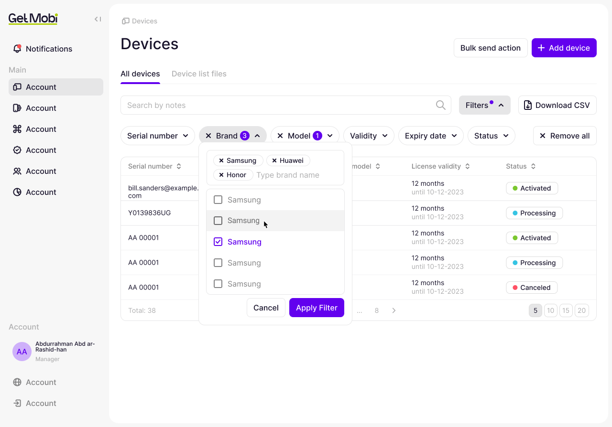
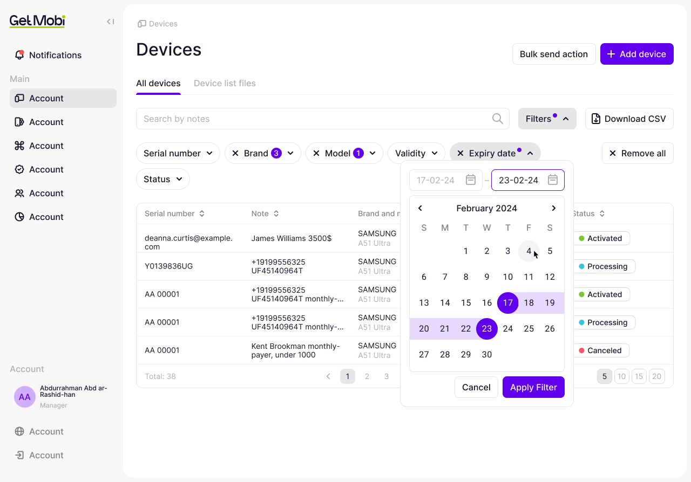
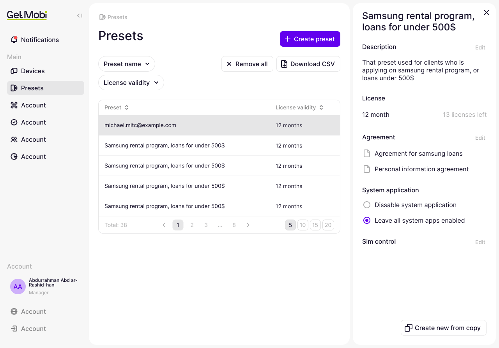
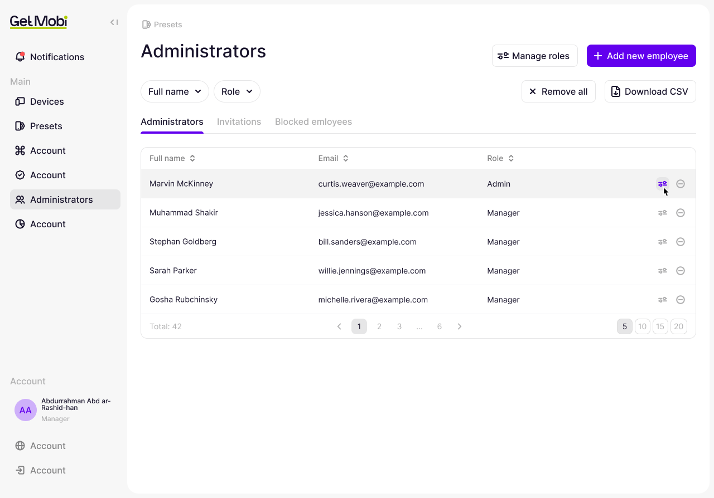

GetMobi — проектирование B2B-платформы управления устройствами
Содержание
Моя роль
Founding Product Designer. Отвечал за UX/UI MDM-платформы и развитие интерфейса с нуля. Проектировал ключевые B2B-сценарии, сформировал систему компонентов и паттернов и работал с командой разработки над их реализацией.
О продукте
GetMobi — облачная платформа для удалённого управления корпоративными устройствами и смартфонами, выданными в кредит. Администраторы подключают устройства, настраивают ограничения, управляют лицензиями и отправляют удалённые команды.
Я присоединился на ранней стадии, когда большая часть продукта ещё проектировалась. Задача состояла в том, чтобы заложить общую архитектуру интерфейса: новые функции должны были появляться без накопления разрозненных компонентов и противоречивых сценариев.
Система интерфейса
Работу я начал с повторяющихся элементов и правил их поведения. Собрал компактную библиотеку кнопок, полей, фильтров, статусов и других компонентов. На её основе проектировал таблицы, боковые панели, навигацию и многошаговые формы.
Важно было переиспользовать не только внешний вид, но и логику взаимодействия: где открываются подробности, как выбираются объекты, как пользователь запускает действие и получает обратную связь.
Практически весь интерфейс строился из этой библиотеки. При проектировании следующего раздела можно было опираться на готовые компоненты и сценарии, а разработчикам — использовать уже согласованное поведение.
Компоненты и состояния

Работа с устройствами
Таблица устройств стала основной рабочей областью администратора. Из неё нужно было переходить к сведениям об устройстве, проверять историю и выполнять операции.
Чтобы сократить переходы между страницами, я вынес подробности и историю в боковую панель. Список оставался на экране, а выбранное устройство выделялось в таблице. Администратор мог изучить контекст и перейти к действию, не открывая отдельную страницу.
Тот же принцип использовал для уведомлений: они появлялись рядом с рабочей областью и сохраняли контекст текущей задачи.
Карточка, история и уведомления



Массовые действия
Блокировка, разблокировка и отправка уведомлений решают разные задачи, но требуют похожей последовательности действий. Я спроектировал для них общий процесс: выбрать команду, указать устройства, подтвердить операцию и увидеть её статус.
На этапе выбора устройств таблица переходила в режим множественного выделения. Выбранные строки подсвечивались, а кнопка отправки показывала количество получателей.
Общий сценарий стал основой для новых типов команд. Команде не требовалось каждый раз заново проектировать выбор устройств и запуск операции: можно было сосредоточиться на особенностях конкретного действия.
Выбор команды и устройств


Развитие платформы
По мере развития продукта я спроектировал расширенные фильтры, поиск, настройки конфигураций и управление административными ролями. Эти сценарии использовали ту же систему таблиц, панелей и форм.
В фильтрах предусмотрел выбор нескольких значений и диапазона дат. Применённые условия оставались видимыми над таблицей, чтобы администратор понимал, какую выборку устройств он видит.
Фильтры и диапазон дат


Для конфигураций использовал сочетание списка и панели подробностей. Для административных ролей — отдельную настройку разрешений, сгруппированных по разделам продукта.
Новые возможности встраивались в существующую архитектуру. Перед передачей в разработку я проверял интерфейсы по принципам удобства использования и совместно с аналитиками и разработчиками прорабатывал поведение сценариев.
Конфигурации и права доступа


Результат
Построил интерфейс MDM-платформы вокруг единой системы компонентов и повторяемых рабочих сценариев: управление устройствами, массовые действия, конфигурации, роли и права доступа использовали общие паттерны. Это сократило количество шагов в ключевых операциях, ускорило работу администраторов и снизило количество ошибок в сложных сценариях. Для команды переиспользование компонентов и готовой логики ускорило проектирование новых функций и сократило количество уточнений при передаче макетов в разработку.